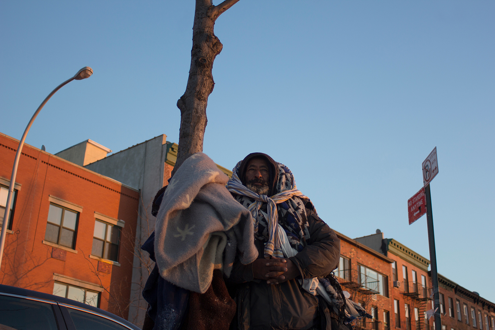
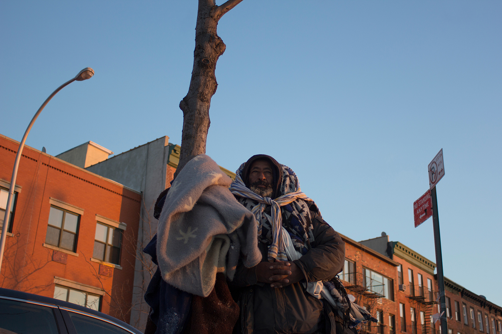
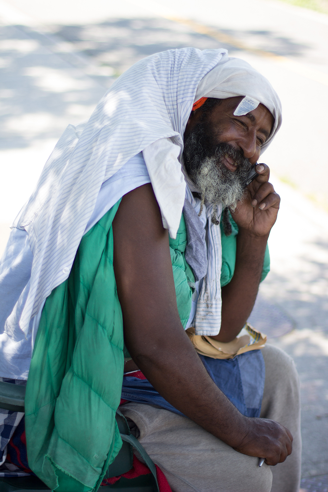
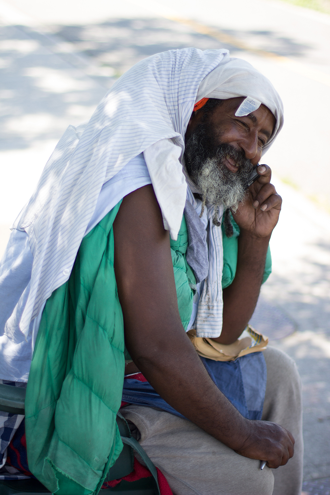
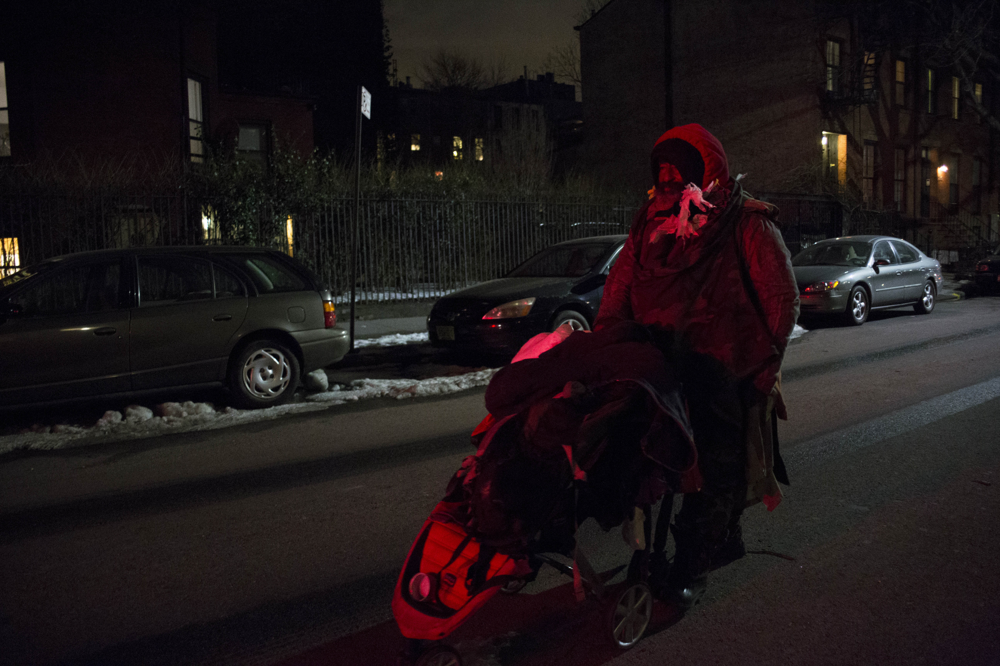
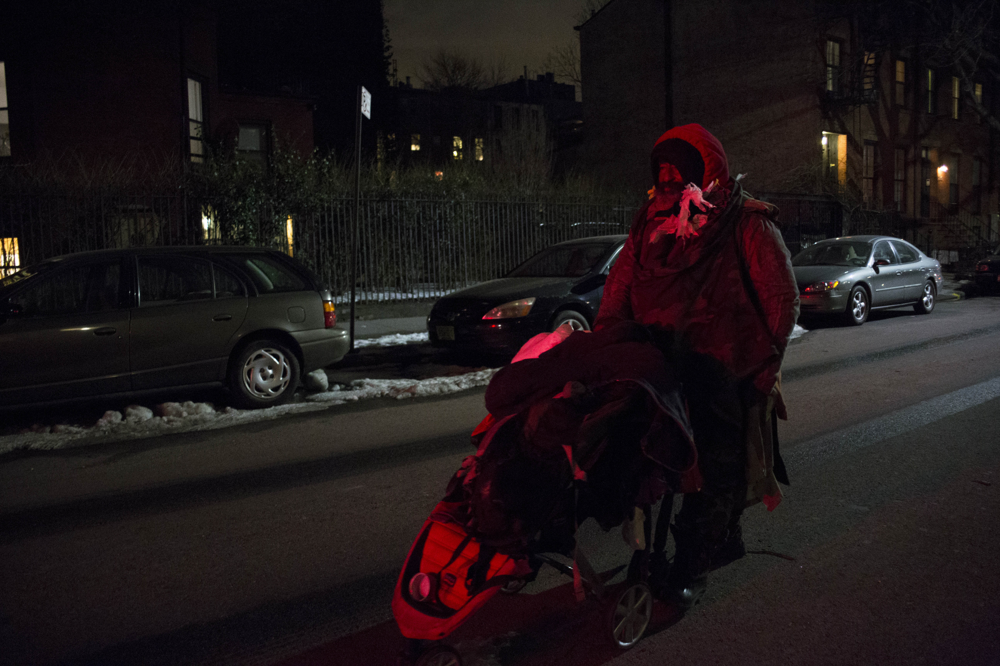

Regally draped in blanket and cloth, Eshete Woldeyilma is a patchwork king. Nearly everyone in my Brooklyn neighborhood of mild-mannered businessmen and stay-at-home moms has seen him, but few have taken the time to speak with him. I didn’t meet Eshete myself until 2013, when I stopped him in the middle of the street and asked to take his photograph. After perusing the developed roll of film, I quickly became dissatisfied by how detached and impersonal the images were, and how my relationship to my subject was nothing more than that of an onlooker or bystander. Nonetheless, I remained fascinated by Eshete’s sturdy form caught in the silver grain, and I so I resolved to do better. I would change my approach to get the photographs I wanted. Since then, I’ve been following Eshete’s movements with the seasons and photographing him in his nook on Columbia Street, where the concrete meets the New York harbor, and rusty cranes loom heavy in the sky.
As we spent time in places such as the now-closed Community Bookstore, I started noticing the uncomfortable and churlish looks we received from those I had considered members of my community, once even from the father of a family I babysat for. I am not one of the silver-spoon-in-mouth children of gentrification; my family has lived in South Brooklyn since 1939. My grandmother didn’t leave her family in Puerto Rico because she thought Brooklyn looked like the hip place to be, and she didn’t fight for a ZIP Code; she bought property where the banks were afraid to sell. I met Eshete at a time when I was struggling to see a community of people around me with stories similar to those of my family. Like my grandmother, Eshete came to America in search of a better job, and a better life. He fled Ethiopia in 1997, and used to have an apartment on Columbia Street until he was evicted in 2010.
My conversations with Eshete could often be repetitive as we discussed the changing neighborhood, with its old-timers passing away, and the mom and pop shops closing, but regardless, my visits began to last longer, and I began to photograph him more closely, and more candidly. I believe that when you draw, paint, or photograph an individual, you are not capturing their form, but their energy. By candidly photographing Eshete, I am refusing to curate his existence or to impose my views upon his story.
On a Friday night, three years after we all met, Eshete and I stroll into a diner, accompanied by Jeneane, who teaches in the city and visits Eshete often. As we enter, the staff eagerly welcomes Eshete and he responds with a booming “Heellooo!” and a presidential wave. We are cordially offered the table in the front window, and Jeneane orders the usual burgers for the table. Eshete, trying not to shout, attempts to recount the brutality from the police, and the never-ending, steadily-escalating abuse from the neighborhood. When a second waiter approaches our table to catch up on Eshete’s story, I begin to realize that the true members of my community are those gathered around our table, all of whom can effortlessly overlook Eshete’s appearance and circumvent the easy stereotypes.
Eshete is not someone I would consider to be “regular” or “average,” but now I’m able to appreciate his uniqueness; it’s of a type rarely found in my neighborhood. His ostracization has worn away at his English, but I’ve found ways to use photography to bridge that gap. In order to understand him, I’ll keep taking his photograph. As I’ve continued to document his story, the camera has allowed me to foster a friendship that I wouldn’t otherwise have had access to, and as a result, I’ve finally created the images I couldn’t find back in 2013.
 



 


 
